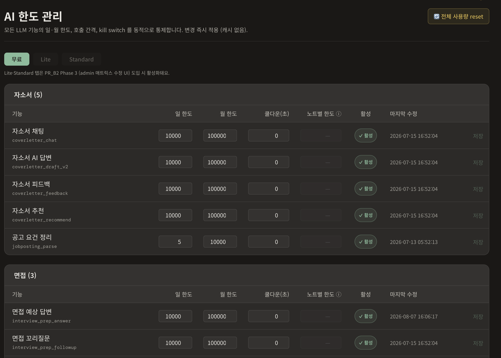
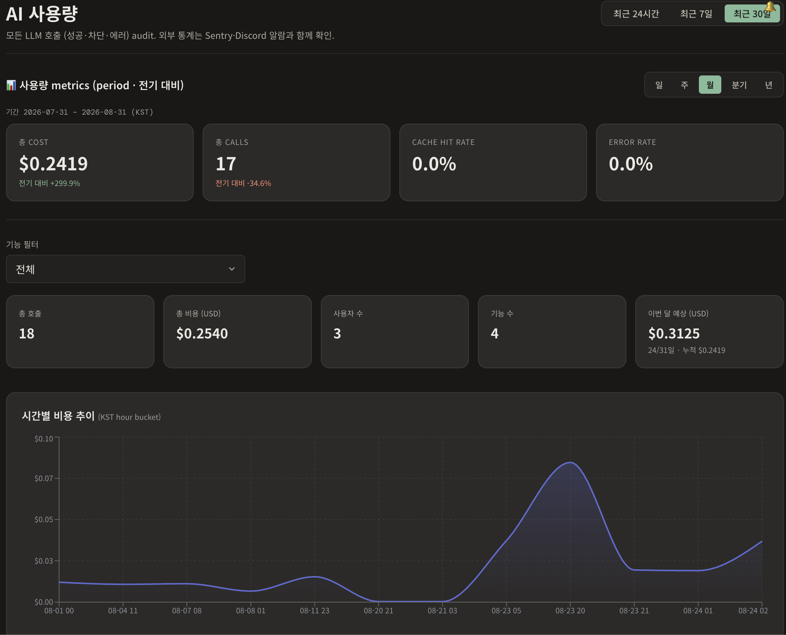

장성원
AI를 통제·시스템화하는 개발자
- 1인 풀스택치뽀 — 취업 지원 일정 관리 SaaS. 기획·개발·배포·운영을 혼자 맡아 2026.08 초 공개, 2026-09-09 기준 가입자 102명(운영 화면 실측).
- 에스크로 컨트랙트 · 팀장우아정 가스비 최적화 — 팀 프로젝트가 끝난 뒤 컨트랙트를 혼자 다시 열어 거래 생성 비용을 최대 52% 줄였다(자체 측정).
- DID 인증 백엔드 · 아키텍처IoT 침입 방지 시스템 — 인증과 탐지의 순서를 바꿔 처리 속도 약 30% 개선(구현 단계 실측값).
기술 스택 — 어디에 썼는지와 함께
- TypeScript (strict) — 치뽀 백엔드·프론트엔드 전체
- NestJS 11 · TypeORM — 치뽀 API 서버와 스키마 관리
- PostgreSQL — 치뽀 운영 데이터베이스
- React 19 · Vite · Zustand · TanStack Query — 치뽀 화면
- Tailwind · Tiptap · dnd-kit — 치뽀 에디터·드래그 재배치
- Railway (PaaS) · Cloudflare R2 — 치뽀 배포와 파일 보관
- Anthropic Claude · OpenAI — 치뽀 LLM 프로바이더 2종
- 카카오 OAuth · JWT — 치뽀·IoT 인증
- Solidity · Hardhat · Ethereum(Sepolia) — 에스크로·DID 컨트랙트
- Python · FastAPI · Playwright — 우아정 크롤링 서버
- Node.js 21 · Express 4.21 · MySQL(Sequelize) — IoT 인증 서버
- Docker · GitHub Actions — IoT 배포 자동화
학력 · 자격
Project 01
치뽀 — 취업 지원 일정 관리 SaaS
여기저기 흩어 둔 메모로 지원 일정을 챙기다 마감을 놓친 적이 있다. 같은 불편을 겪는 사람이 나만은 아닐 것 같아 직접 만든 서비스다.

서비스에 AI 기능을 붙이고 나서 다뤄야 할 것이 늘었다. 붙이는 일 자체는 오래 걸리지 않았고, 어려운 쪽은 그 다음이었다. 관측된 증상은 다섯 가지다.
- 비용이 응답이 아니라 요청 시점에 확정됐다. 길이를 재지 않고 그대로 넘기면 그 순간 돈이 나갔다.
- 프로바이더가 응답을 돌려주지 않는 때가 있었다.
- 사용자가 적어 넣은 문장에 개인정보가 섞여 들어왔다.
- 외부 호출은 성공해 비용이 나갔는데 그 직후 상태 갱신이 실패해, 돈은 썼는데 결과가 남지 않은 기록이 생겼다.
- 어느 기능이 비용을 쓰고 있는지 들여다볼 방법이 없었다.
다섯 증상의 원인은 기능이 아니라 호출 경로의 생김새에 있었다.
- 프로바이더를 부르는 자리가 기능마다 따로 있어, 모델을 바꾸거나 기록을 남기거나 한도를 거는 지점이 기능 수만큼 흩어져 있었다.
- 한도가 코드 안에 상수로 박혀 있어, 값 하나를 바꾸려면 배포가 필요했다.
- 비용 집계가 응답을 받은 뒤에야 일어나서, 이미 나간 요청을 막을 자리가 없었다.
- 외부 호출과 그 결과를 저장하는 일이 한 단위로 묶여 있지 않아, 한쪽만 성공한 상태가 만들어질 수 있었다.
다섯 증상이 전부 같은 경로 위에서 생기므로 경로부터 다시 잡았고, 아래 두 가지가 그중 가장 오래 붙들고 설계한 부분이다.
(a) LLM 호출을 공통 계층으로 모으고, 폴백 조건을 좁혔다
- 선택
- 프로바이더 호출을 기능마다 직접 하지 않고 단일 진입점으로 모았다. 이 계층 안에서만 모델을 고르고, 감사 로그를 남기고, 한도를 적용한다. 대체 프로바이더로 넘기는 조건은 일시 장애(5xx·타임아웃)로 한정했다.
- 고른 이유
- 모델을 바꾸는 일이 설정값 수정 수준으로 끝난다. 장애가 나도 손댈 지점이 한 곳이고, 새 기능이 붙어도 한도와 기록이 자동으로 따라붙는다.
- 고르지 않은 대안
- 기능마다 프로바이더 SDK를 그대로 부르는 방식 — 처음 작성은 빠르지만 모델 교체·기록·한도 적용 지점이 기능 수만큼 늘어난다. 실패 전부에 폴백을 거는 방식 — 잘못된 요청과 한도 초과까지 다시 부르게 되어 비용이 두 배가 되고, 원인이 응답에 그대로 적혀 있는데도 확인이 늦어진다.
- 트레이드오프
- 폴백에서 제외한 경우는 사용자가 곧바로 실패를 받는다. 가용성을 조금 내주고 비용과 원인 추적을 택했다.
(b) 비용은 호출 전에 끊고, 한도는 코드 밖으로 뺐다
- 선택
- 입력 토큰 상한을 두고 프로바이더에 닿기 전에 차단한다. 반복되는 요청은 네 갈래 캐시(콘텐츠 해시 · DB TTL · 인메모리 · 프롬프트 캐시)로 외부 호출 자체를 없앤다. 기업 조사 결과는 (기업명, 직무) 정규화 키의 TTL 캐시에 담아 여러 사용자가 나눠 쓰고, 원하지 않으면 빠질 수 있게 했다. 기능마다 하루·한 달 한도, 호출 사이 최소 간격, 차단 스위치를 관리자 화면에서 바로 바꾼다. 코드에 박아 둔 한도는 0개다.
- 고른 이유
- 비용은 응답이 아니라 요청 시점에 확정된다. 응답을 받은 뒤 집계하는 방식으로는 이미 나간 돈을 되돌릴 수 없다. 한도를 밖으로 뺀 이유도 같다 — 값을 바꾸는 데 배포가 필요하면, 사고가 난 순간 가장 느린 경로를 밟게 된다.
- 고르지 않은 대안
- 사용량을 집계해 다음 호출을 막는 방식 — 구현은 간단하지만 첫 폭주를 그대로 통과시킨다. 한도를 상수로 두는 방식 — 코드만 보면 값이 명확하지만 조정마다 배포가 붙는다.
- 트레이드오프
- 런타임에 바꿀 수 있다는 것은 잘못 넣은 값도 즉시 반영된다는 뜻이다. 그래서 이 화면을 관리자 권한 뒤에 두고, 경로도 예측하기 쉬운 이름을 피해 따로 뒀다.

Lite·Standard 탭은 아직 만들지 않은 자리다.나머지 설계는 한 줄씩만 적는다.
- 개발 단계 사전 통제 — 스키마는 자동 동기화를 쓰지 않고 마이그레이션 파일로만 바꾼다. 되돌리기 메서드를 반드시 붙이고, 컬럼 삭제 같은 파괴적 변경은 두 번의 릴리즈로 나눈다. 적용과 되돌리기를 CI가 한 번씩 돌려 확인한다.
- 보안 — 자소서와 활동 기록을 잇는 지점에서 각 참조의 소유권을 두 번 확인한다. AI 호출 앞에는 개인정보 제거와 동의 확인을 둔다. 계정 삭제는 연관 데이터와 파일 정리까지 함께 처리한다.
- 정합성 — 외부 호출과 그 결과 저장을 한 트랜잭션으로 묶고, 저장이 실패하면 차감한 코인을 되돌리는 보상 처리를 둔다. 돈은 나갔는데 결과가 없는 기록이 남지 않게 하기 위해서다.
- 배포 이후 운영 — 헬스체크를 통과한 새 컨테이너로만 트래픽이 넘어간다. 자동 차단·비용 급증·에러율 임계치 초과는 웹훅 알림으로 받는다. 혼자 운영하니 내가 보고 있지 않아도 문제를 알 수 있어야 했다.
- 외부 데이터 파이프라인 — 공시·주요 언론 등 허용 도메인 안에서만 검색해 커버리지보다 신뢰성을 택했고, 모델이 낸 결과는 자유 텍스트가 아니라 구조화된 8개 필드로 정규화해 저장한다.
| 항목 | 값 | 단서 |
|---|---|---|
| 가입자 | 102명 | 2026-09-09 기준, 운영 화면 실측 |
| 배포 | 43회 | 프론트·백엔드 합계, 릴리즈 태그 실측 |
| DB 스키마 변경 | 21회 | 같은 3주 구간 (누적 마이그레이션 111개) |
| 데이터 손실 · 서비스 중단 | 0 · 0 | 같은 3주 구간 |
| 기획부터 배포까지 당일에 끝낸 기능 | 3건 | 같은 3주 구간 |
운영 쪽에서 달라진 것은 두 가지다. 모델 교체는 설정값 수정으로 끝나고, 한도 조정은 배포 없이 끝난다.
개발에 AI를 들이기 시작했을 때는 속도를 올리려다 오히려 느려졌다. 받아온 코드마다 파일이 놓이는 자리와 이름 규칙이 달라서, 쓰는 부담이 검토 부담으로 자리를 옮겼을 뿐이었다. 그래서 경계를 먼저 문서로 고정했다 — 무엇을 맡기고 무엇을 사람이 정하는지, 틀렸을 때 무엇이 잡아내는지를 나눠 적는다.
- 도구에 맡긴 일 — 이미 정해 둔 구조를 따라 코드를 채우는 일, 문서 서식을 맞추는 일, 정해진 점검 절차를 순서대로 돌리는 일.
- 사람이 판단한 일 — 무엇을 만들지, 어떤 구조에 둘지, 어떤 규칙을 지킬지. 행동 규칙 문서와 디자인 문서로 기준을 먼저 고정하고, 반복되는 절차는 명령 13개와 스킬 4종으로 정의했다. 기준을 정하는 쪽은 계속 사람이다.
- 틀렸을 때 잡아낸 장치 — 커밋 전 점검 3단계(정적 분석·타입 검사 → 테스트 → 보안 취약점), 마이그레이션 적용과 되돌리기를 자동으로 돌리는 CI, 그리고 마지막 관문인 직접 사용 검증.
2026-08-18 공부 노트 기능은 화면 2개와 서버 기능 11개, 문서 서식 7종을 하루에 만들었다. 배포 전 직접 써보는 라운드에서 15건 넘게 고친 뒤 점검 절차를 통과해 당일 배포했다.
자동 점검이 놓친 것도 이 라운드에서 나왔다. AI 응답을 기다리는 동안 화면을 새로고침하면 같은 호출이 한 번 더 나가고 그때까지 쓴 내용이 사라졌으며, 쿨다운까지 잘못 걸렸다. 정적 분석과 테스트는 이미 통과한 상태였다. 서버가 진행분을 먼저 저장하게 하고, 이탈 시 경고를 띄우고, 다시 들어오면 이어받게 고쳤다. 결과를 그대로 믿지 않는다는 규칙이 실제로 무언가를 잡아낸 자리다.
운영 중에는 헬스체크가 통과한 컨테이너만 트래픽을 받고, 자동 차단·비용 급증·에러율 임계치 초과는 웹훅 알림으로 받는다.
도구의 성능보다 도구에 주는 기준이 결과를 결정한다.
Project 02
우아정 가스비 최적화 — 블록체인 에스크로 컨트랙트
대금을 컨트랙트에 맡겼다가 확정될 때 정산하는 중고거래 에스크로다. 프로젝트가 끝난 뒤 거래 비용이 계속 걸려 컨트랙트를 다시 열었다.
중개 수수료는 0%로 뒀지만, 사용자는 거래를 만들 때마다 가스비를 냈다. 거래 생성은 이 컨트랙트에서 가장 자주 불리는 함수이고, 비용도 여기에 가장 크게 걸려 있었다. 한 번 쓰고 마는 배포 비용과 달리 이 비용은 거래 수만큼 반복된다.
거래 하나를 만들 때 스토리지에 적는 값이 필요 이상으로 많았다. 구조체 필드가 슬롯을 나눠 쓰지 못해 각자 한 슬롯씩 차지했고, 타임스탬프는 초 단위인데도 가장 넓은 정수 타입으로 잡혀 있었다. 거기에 식별자·설명·생성 시각·사용자별 거래 목록처럼 밖에서 읽기만 하는 값까지 상태로 들고 있었다.
기능은 그대로 두고 저장 구조만 다시 배치했다. 두 가지를 순서대로 적용했다.
(a) 구조체 스토리지 슬롯 패킹
- 선택
- 거래 하나가 차지하는 필드의 순서와 폭을 32바이트 한 슬롯에 맞췄다. 초 단위 시각을 담는 두 필드는 uint256에서 uint48로 폭을 줄여, address 20바이트와 함께 한 슬롯에 들어가게 했다.
- 고른 이유
- 거래 흐름이나 함수 시그니처를 건드리지 않고 저장 횟수만 줄일 수 있다. 쓰는 슬롯 수가 곧 비용이다.
- 고르지 않은 대안
- 필드를 여러 매핑으로 쪼개는 방식 — 슬롯은 줄지만 조회 경로가 흩어져 읽는 쪽 코드가 복잡해진다.
- 트레이드오프
- 필드 순서가 비용이 되므로, 나중에 필드를 하나 더할 때 배치를 다시 계산해야 한다. uint48로 줄인 만큼 표현할 수 있는 시각의 상한도 생기는데, 이 서비스의 수명 안에서는 문제가 되지 않는 범위로 잡았다.
(b) 조회로 대신할 수 있는 필드를 이벤트 로그로 옮김
- 선택
- 식별자·설명·생성 시각·사용자별 거래 목록을 상태에서 빼고 이벤트로 남겼다.
- 고른 이유
- 이 값들은 컨트랙트가 판단에 쓰는 값이 아니라 밖에서 읽기만 하는 값이었다. 상태로 들고 있을 이유가 없다.
- 고르지 않은 대안
- 상태에 그대로 두는 방식 — 컨트랙트만으로 조회가 완결되지만 거래마다 그 값을 다시 사게 된다.
- 트레이드오프
- 이벤트는 컨트랙트 안에서 되읽을 수 없다. 나중에 온체인 로직이 이 값을 필요로 하면 되돌려야 한다.
| 항목 | v1 | v2 | 절감 |
|---|---|---|---|
| createEscrow — 거래 생성, 사용자가 매번 내는 호출 | 237,143 | 112,900 | −52.4% |
| openDispute — 분쟁 신청 | 57,319 | 36,209 | −36.8% |
| 컨트랙트 배포 — 최초 1회 | 1,771,547 | 1,244,931 | −29.7% |
−29.7%는 컨트랙트를 한 번 올릴 때 드는 배포 가스비의 절감이다. 거래 비용이나 중개 구조와는 관계가 없다. 반복해서 드는 비용을 말하는 숫자는 createEscrow의 −52.4% 쪽이다.
v1을 지우지 않고 v2를 따로 배치한 뒤, 같은 테스트를 양쪽에 돌려 나란히 측정했다. 새 쪽만 재면 컨트랙트가 달라진 것인지 테스트가 달라진 것인지 구분할 수 없기 때문이다. 두 번의 릴리즈 태그로 어느 시점의 값인지도 남겼다.
적합하다고 판단한 기술을 회의에 올렸다가, 팀원 의견을 듣고 다른 방식으로 정한 적이 있다. 비용과 팀의 숙련도까지 놓고 보면 내 안이 최선이 아니었다. 혼자 판단했다면 그대로 갔을 결정이다.
Project 03
IoT 침입 방지 시스템 — 블록체인 신원인증
중앙 서버 한 곳에 기대지 않는 IoT 인증 구조를 만들고, 인공지능 탐지와 함께 배치한 시스템이다.
기존 IoT 인증은 중앙 서버에 기대는 구조다. 그 서버가 멈추면 인증 전체가 멈추는 단일 실패 지점이 생기고, 다른 곳에서 새어 나온 계정 정보를 그대로 대입하는 크리덴셜 스터핑에도 취약하다.
신원을 확인해 주는 근거가 서버 한 곳에만 있다는 것이 원인이었다. 그 한 곳이 멈추거나 뚫리면 대체할 근거가 없다.
인증 구조 — 온체인과 오프체인을 나눠서
- 카카오 로그인과 지갑 서명을 결합한 2단계 인증으로 신원을 확인한다.
- 사용자 개인정보는 온체인에 저장하지 않는다. 이더리움 Sepolia에 올린 DID 레지스트리에서는 유효한 신원인지만 조회한다.
- 검증 가능한 자격증명(VC)은 JWT 형태로 오프체인에서 발급·전달한다.
- 정리하면 블록체인이 맡은 역할은 DID 신원인증 하나다. 개인정보를 얹어 두는 저장소도, 로그를 붙들어 두는 장부도 아니다.
아키텍처 재배치
처음 설계는 DID 인증을 앞에 두고 인공지능 트래픽 탐지를 뒤에 두는 순서였다. 온체인 조회는 응답 지연이 큰데 그것이 앞단에 있다 보니, 어차피 막아야 할 비정상 트래픽까지 블록체인 네트워크에 닿았다. 탐지를 1차 관문으로 올리고 인증을 뒤로 뺐다. 먼저 걸러낸 뒤에 확인하는 순서다.
배포 환경
서버를 Docker 이미지로 만들고, GitHub Actions에서 빌드해 레지스트리에 올린 뒤 Self-hosted Runner가 최신 이미지를 받아 컨테이너를 교체하게 했다. RPC 주소와 발급자 개인키는 코드에 두지 않고 배포 시점에 Secrets로 주입한다. 자동화의 목적은 편의가 아니라 사람이 실수할 여지를 줄이는 것이라고 봤다.
탐지를 앞으로 옮긴 뒤 처리 속도가 약 30% 개선됐고, 불필요한 온체인 트랜잭션이 줄었다.
이 값은 구현 단계에서 잰 실측값이며 논문에 실린 수치가 아니다.
이 프로젝트에서 결과를 어떤 절차로 확인했는지 남겨 둔 기록이 없어 비워 둔다.
블록체인을 다뤄 본 적이 없는 상태에서 이 파트를 맡았다. 혼자 붙들고 있기보다, 어디까지 이해했고 어디서 막혔는지를 추려 같은 파트 팀원에게 물었다. 배운 내용은 문서로 정리해 팀에 공유해서, 같은 질문이 두 번 나오지 않게 했다.
2025 한국소프트웨어공학 학술대회(KCSE) 우수학부생논문상 — 2025-01-21 · 5인 공저 중 3저자.
Method
계측 → 절감 → 재측정: 이미 밟은 순서
두 프로젝트에서 같은 순서를 한 번씩 밟았다. 아래는 앞으로의 계획이 아니라 지나온 기록이다.
치뽀 — 호출마다 기능·모델·토큰·비용·지연·상태를 남긴다. 개인정보는 지운 뒤 기록한다. 기록이 기능 단위로 나뉘어 있어 어느 기능이 비용을 쓰는지, 캐시가 얼마나 맞는지, 어디서 실패하는지 화면에서 바로 보인다.
우아정 — hardhat gas-reporter로 v1의 함수별 가스를 재서 기준선을 먼저 만들었다. 기준선 없이 바꾸면 나중에 무엇과 비교할지가 없어진다.

치뽀 — 기록을 보고 줄일 대상을 골랐다. 입력 길이는 프로바이더에 닿기 전에 자르고, 반복되는 요청은 캐시로 외부 호출 자체를 없앴다. 기업 조사 결과는 정규화한 키로 묶어 여러 사용자가 나눠 쓴다.
우아정 — 슬롯 패킹, 타임스탬프 폭 축소, 조회용 필드의 이벤트 이전으로 저장 구조를 다시 배치했다. 기능은 건드리지 않았다.
치뽀 — 같은 화면이 직전 기간과의 차이를 함께 보여주도록 해서, 바꾼 뒤에도 같은 기준으로 다시 볼 수 있게 뒀다.
우아정 — v1을 지우지 않고 v2를 나란히 두고 같은 테스트를 돌렸다. 그 차이가 앞의 표다.
순서를 미리 정해 두면, 줄었다고 말할 때 무엇과 비교해 줄었는지를 함께 말할 수 있다.
마무리
이 문서의 수치는 각 항목에 적힌 기준 시점의 실측값입니다.